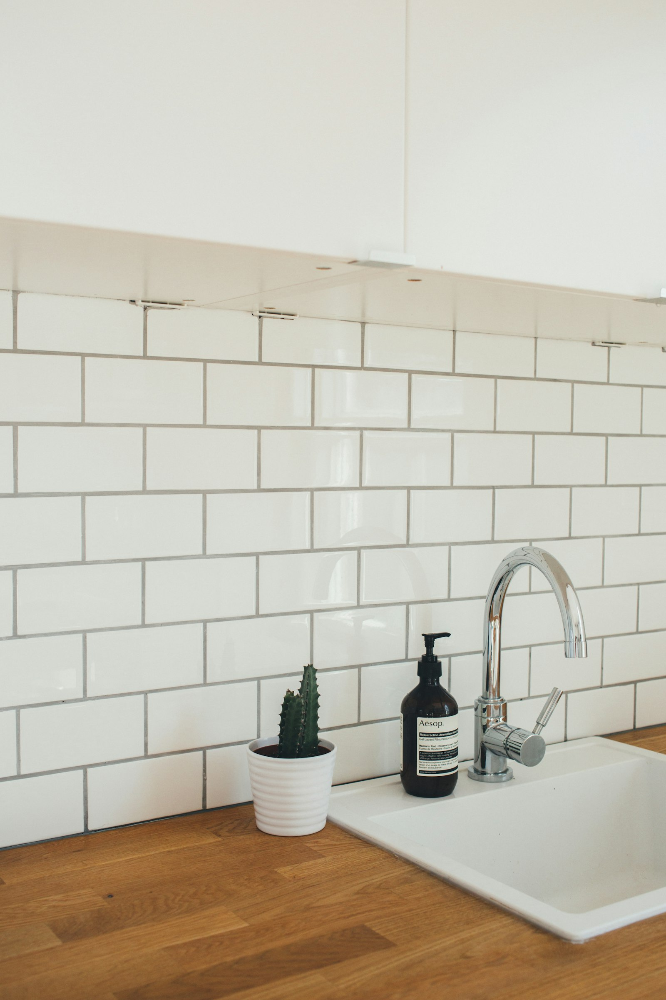

Concrete Contractors in Enid, OK
The main local service page for general concrete contractor searches and comparison intent.
Use this independent local guide to compare options for driveways, patios, slabs, stamped concrete, and concrete repair in the Enid area. Request quotes, review key project considerations, and ask better questions before you hire.
The main local service page for general concrete contractor searches and comparison intent.
For new driveways where grading, drainage, base preparation, and long-term use matter.
Useful when old concrete is failing, settling, or beyond practical repair.
Focused on outdoor living space, finish options, drainage, and cracking prevention.
For decorative flatwork where surface design, sealer upkeep, and weather exposure matter.
For shed pads, shop slabs, garage slabs, and other structural flatwork needs.
Helpful when cracks, spalling, flaking, or surface wear need closer evaluation.

A clean driveway image helps the page feel real and gives the site a more sellable look.

Useful for the patio service page and homepage service gallery.

Supports decorative flatwork sections without inventing project claims.

Useful for slab-installation and contractor-comparison content.

Supports crack and repair content without pretending it is your own project photo.
Review the main variables that affect pricing, from square footage to removal and finish level.
Use a simple question list to compare providers and spot weak quotes before work starts.
Expand coverage around Enid and nearby communities once the first site is validated.
Submitting this form does not guarantee service availability, contractor acceptance, scheduling, or final pricing. This site operates as an independent local guide unless ownership details are updated.
Cracking can be affected by temperature swings, moisture changes, sub-base issues, poor drainage, and ordinary shrinkage over time.
If there is significant settlement, repeated cracking, poor drainage, or widespread surface failure, replacement may be worth comparing against repair.
It may require periodic cleaning and resealing depending on exposure, wear, and finish type.